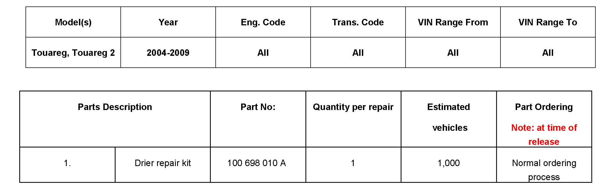
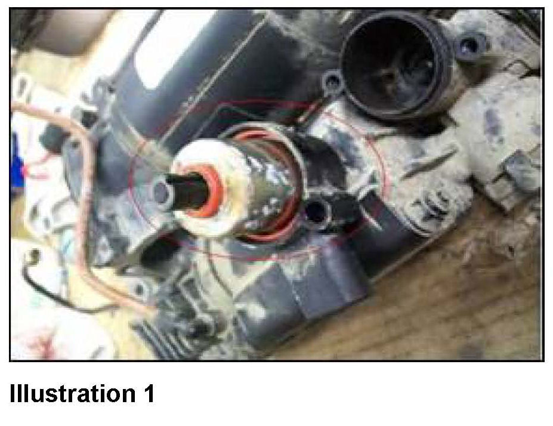
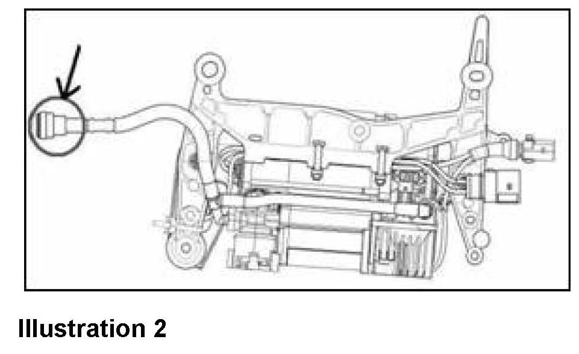
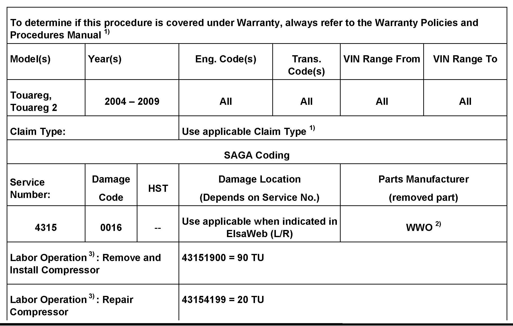
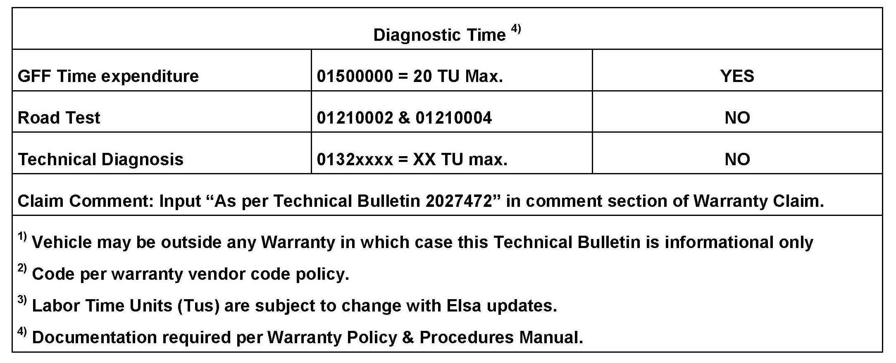

Suspension - Self-Leveling Suspension Inop/Error Mssg.
43 11 01August 31, 2011
2027472

Vehicle Information
Condition
Self-Leveling Suspension Inoperative with Error Message in Multifunction Display
The customer may comment:
^ The self-leveling control does not work.
^ Error Message in Multifunction Display.
Workshop findings:
^ The self-leveling control does not work.
^ Error Message in Multifunction Display.
^ Humidity in the intake hose and in the solenoid valve block of the compressor for air suspension.
The following DTCs can be logged:
^ 01400 001 control position not adjustable or upper limit exceeded
^ 02250 001 valve switched off, valve operating period
Technical Background

If the air suspension compressor ingests in humidity for a long time, the drier can get saturated (illustration 1, red circle). At very low temperatures high air humidity in the solenoid valve block can condensate, freeze and seize the valves. The self-diagnosis recognizes seized valves as "mechanical complaint".

Humidity can be ingested through a leak on the connector (illustration 2, arrow) between the vacuum pipe of the compressor and the air hose to the air filter housing.
Production Solution
Concern identified after end of production.
Service
Install the repair kit for the drier.
^ Install the repair kit for drier Part No.100 698 010 A according to the repair manual. See Group 43 in ElsaWeb.
^ Remove the air supply unit without solenoid valve block according to the repair manual. See repair Group 43 in ElsaWeb. Running gear> running gear, axles, steering > self-leveling control, air suspension > self-leveling control repair> remove and install air supply unit without solenoid valve block.
^ Replace the piston ring for the air supply unit, See repair Group 43 in ElsaWeb. Running gear > running gear, axles, steering > self-leveling control, air suspension > self-leveling control repair- > replace piston ring.


Warranty
Required Parts and Tools
No Special Tools required.
Additional Information
All part and service references provided in this Technical Bulletin are subject to change and/or removal.
Always check with your Parts Dept. and Repair Manuals for the latest information.